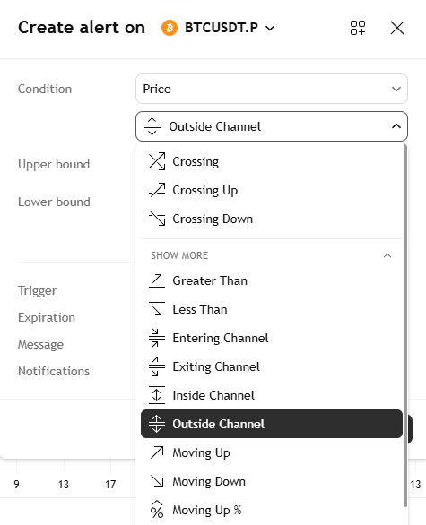

Встановіть примусову тривогу для ключового слова
Виберіть тип тривоги та звук у правилі ключового слова. У відео показано, як встановити примусову тривогу для сигналу TradingView.
Надішліть тест із цієї сторінки, щоб перевірити доставку на ваш телефон Android. Потім надішліть одне сповіщення TradingView з ключовим словом AA, щоб перевірити ваше правило сповіщення.
У DivAlarm відкрийте Сповіщення за ключовими словами · Автоматичні ордери → Ключові слова вебхуків, додайте AA і увімкніть для нього сповіщення. Скопіюйте Webhook URL нижче, увійшовши в той самий обліковий запис, що й на телефоні.
Увійдіть у свій обліковий запис додатку, щоб побачити свою URL-адресу
Тримайте цю адресу в таємниці. Хто її має, може надіслати сигнал у ваш обліковий запис.
Щоб протестувати лише сповіщення, вимкніть автоордери для будь-якого ключового слова або комбінації, які відповідають AA.
 Відкрити зображення у повному розмірі
Відкрити зображення у повному розмірі
Клацніть правою кнопкою миші на графіку та виберіть Додати сповіщення. Відкрийте Сповіщення, позначте Webhook URL, вставте свою адресу та натисніть Застосувати.
Використовуйте цю ж URL-адресу для інших сповіщень. Якщо нове сповіщення вже показує вашу адресу, перевірте, що Webhook URL увімкнено. Для існуючого сповіщення перевірте його власні налаштування.
 Відкрити зображення у повному розмірі
Відкрити зображення у повному розмірі
 Відкрити зображення у повному розмірі
Відкрити зображення у повному розмірі
 Відкрити зображення у повному розмірі
Відкрити зображення у повному розмірі
Для швидкої перевірки виберіть Ціна → За межами каналу. Якщо поточна ціна, наприклад, 100, встановіть нижню межу 98, а верхню — 99. Виберіть Лише один раз. Для сповіщення за індикатором виберіть потрібну умову індикатора.

Відкрити зображення у повному розміріВідкрийте Повідомлення у TradingView, додайте те саме ключове слово AA, яке ви увімкнули в додатку, і натисніть Застосувати. Скопіюйте приклад нижче. Якщо ваше правило відповідає початку повідомлення, поставте AA першим.
AA Webhook test
Щоб додати символ і ціну, використовуйте AA {{ticker}} {{close}}. TradingView підставляється при спрацюванні сповіщення.
 Відкрити зображення у повному розмірі
Відкрити зображення у повному розмірі
Натисніть Створити і зачекайте оновлення ціни. Знайдіть подію у журналі сповіщень TradingView, потім перевірте AA тривогу в DivAlarm. Вимкніть тестове правило та тестове сповіщення TradingView після завершення.
Виберіть тип тривоги та звук у правилі ключового слова. У відео показано, як встановити примусову тривогу для сигналу TradingView.
Для Pro автоордерів зареєструйте API-ключ біржі у Налаштування → Налаштування автоордеру. На Bitget виберіть Read-write і увімкніть Futures order для розміщення ордерів та Futures Holdings для перегляду позицій.
Далі натисніть кошик у крайньому правому куті рядка з ключовим словом, щоб вибрати біржу, символ і кількість. Відповідний живий сигнал виконає ордер, якщо він увімкнений.
 Відкрити зображення у повному розмірі
Відкрити зображення у повному розмірі
Введіть (1&2)|3 у Комбінація тривоги і 1h 30m для вікна часу. Комбінація спрацює, коли ключові слова 1 і 2 надійдуть протягом 90 хвилин, або коли надійде ключове слово 3.
Правила та приклади комбінацій · DivAlarm ключові слова сигналу (@D, @E та @P)
Вибір ключових слів зі сповіщень телефону або повідомлень вебхуків